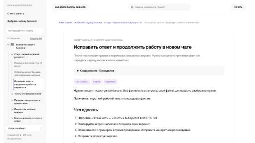

F
Fly AIИИ-ассистент
«Fly AI» представлен в разделе «ИИ-ассистент». При выборе проверьте нужную операцию и условия работы с результатом.
Раздел «Чат-боты и ассистенты»: варианты ИИ для этой задачи, описания возможностей и переходы к обзорам. Сравните несколько решений на одинаковом примере.
Сохраните исходный запрос и отметьте конкретные расхождения. В Молекуле можно подготовить исправление с нужными фактами и ограничениями; принимайте результат после проверки, а не согласия модели.
В этом ответе перепутаны комплектация и срок доставки. Помоги составить уточняющий запрос с правильными фактами. Укажи, какие утверждения надо убрать и что проверить после исправления.

«Fly AI» представлен в разделе «ИИ-ассистент». При выборе проверьте нужную операцию и условия работы с результатом.
«Friend AI» работает с материалами для социальных площадок.

Gemini помогает обсуждать тексты, искать сведения и работать с визуальными материалами. В приложении есть исследовательские и творческие режимы; доступ в продуктах Google проверяется отдельно.
HandyAI предоставляет разговорный интерфейс и средства генерации текста и изображений с участием ИИ. В приложении доступны библиотеки запросов, а также языковые и визуальные модели. Документация дополняет эти инструменты, связывая подготовку пользовательского запроса с рассмотрением возможного способа получения нужного материала.
Ioni AI помогает автоматизировать работу с клиентскими обращениями с помощью языкового ИИ. В наборе представлены помощник, чатбот, поиск, конструктор виджетов и анализ диалогов. Продукт связывает разговорный канал обслуживания с подготовкой интерфейсного элемента и рассмотрением сведений о состоявшемся общении.
Learnex AI предлагает разговорную помощь по учебным предметам через виртуальных ИИ-преподавателей. Среди направлений названы физика, математика, история и кибербезопасность. Платформа предназначена для индивидуального обращения по теме, где пользователь задаёт вопрос и получает объяснение в диалоговом формате вместо одной общей программы обучения для всех участников.
«MessageGPT» представлен в разделе «Чат-боты и ассистенты». При выборе проверьте нужную операцию и условия работы с результатом.
Для «MGAI» сначала определите свою задачу и требуемый результат. Карточка относится к направлению «Чат-боты и ассистенты».
Microsoft 365 Co-pilot добавляет возможности ИИ к приложениям Microsoft 365. Отдельно предусмотрен деловой чат для подведения итогов проекта. Продукт связывает работу в офисном окружении с разговорным получением краткого результата по проектному материалу и использованием помощника внутри подключённых приложений.
«Opus by Anthropic» представлен в разделе «Чат-боты и ассистенты». При выборе проверьте нужную операцию и условия работы с результатом.
«pdfy» представлен в разделе «Чат-боты и ассистенты». При выборе проверьте нужную операцию и условия работы с результатом.

PopAI предлагает работу с документами и подготовку презентационных материалов. Для значимого ответа важно сверить его с соответствующим разделом исходного документа.
Для «Privee.fun» сначала определите свою задачу и требуемый результат. Карточка относится к направлению «Чат-боты и ассистенты».
«PulsarChat» представлен в разделе «Чат-боты и ассистенты». При выборе проверьте нужную операцию и условия работы с результатом.
«QuestionBox» представлен в разделе «Чат-боты и ассистенты». При выборе проверьте нужную операцию и условия работы с результатом.
Сравнивать «SecondSoul» с другими инструментами раздела «Чат-боты и ассистенты» удобнее на одинаковом исходном материале.
«Tune Chat» готовит текстовый черновик по условиям задачи.
Whelp собирает обращения из нескольких каналов в одном рабочем окружении. В описании перечислены телефон, почта, чат и приложения для сообщений. Программа предназначена для общей работы с разговорами клиентов, позволяя рассматривать поступившие обращения вместе вместо раздельного просмотра каждого коммуникационного канала.

YesChat.ai используют, чтобы готовить музыкальную композицию по заданию. Ещё одно направление работы: собирать видеосцену по описанию или визуальному исходнику.

ChatDOC позволяет задавать вопросы по документам с помощью ИИ-помощника чтения. Для разбора можно выбирать текстовые участки и таблицы, а ответы связываются с цитируемыми фрагментами. Такой формат предназначен для поиска сведений внутри материала, где важно возвращаться к исходному месту и проверять основание ответа.
Сравнивать «Coze AI» с другими инструментами раздела «Чат-боты и ассистенты» удобнее на одинаковом исходном материале.
«Cutechat AI» представлен в разделе «Чат-боты и ассистенты». При выборе проверьте нужную операцию и условия работы с результатом.
«Dialogview» связан с обработкой обращений клиентов.
Сравнивать «Dolores» с другими инструментами раздела «Чат-боты и ассистенты» удобнее на одинаковом исходном материале.
Сравнивать «Dream Interpreter» с другими инструментами раздела «Чат-боты и ассистенты» удобнее на одинаковом исходном материале.
«FanChat» представлен в разделе «Чат-боты и ассистенты». При выборе проверьте нужную операцию и условия работы с результатом.
Для «GPT-OPEN» сначала определите свою задачу и требуемый результат. Карточка относится к направлению «Чат-боты и ассистенты».
Guru предоставляет разговор с ИИ через WhatsApp и обрабатывает сообщения на естественном языке. Пользователь может обсуждать разные темы в привычном мессенджере. Сервис предлагает варианты доступа с разными условиями, сохраняя общий сценарий обмена сообщениями с чат-ботом на повседневные вопросы.
«Hansei» разбирает данные для рабочего анализа. «Hansei» также помогает организовать работу с базой знаний.
Для «Hello AI» сначала определите свою задачу и требуемый результат. Карточка относится к направлению «Чат-боты и ассистенты».
Для «Kasper» сначала определите свою задачу и требуемый результат. Карточка относится к направлению «Чат-боты и ассистенты».
Сравнивать «Kuki Ai» с другими инструментами раздела «Чат-боты и ассистенты» удобнее на одинаковом исходном материале.
Langotalk предлагает языковое обучение через чат с ИИ. Можно практиковать речь на разных языках и работать с запоминанием материала. Разговорный формат объединяет учебное содержание и практику в персональном взаимодействии: пользователь обращается к изучаемому языку через диалог и предусмотренные обучающие возможности помощника.
Сравнивать «LlamaChat» с другими инструментами раздела «Чат-боты и ассистенты» удобнее на одинаковом исходном материале.
«Localy» преобразует речевую запись в письменный материал.
Сравнивать «Lollipop Chat» с другими инструментами раздела «Чат-боты и ассистенты» удобнее на одинаковом исходном материале.
Для «Mia AI» сначала определите свою задачу и требуемый результат. Карточка относится к направлению «Чат-боты и ассистенты».
«Mojju - 100+ custom GPTs for OpenAI» представлен в разделе «Чат-боты и ассистенты». При выборе проверьте нужную операцию и условия работы с результатом.
Для «Mojo» сначала определите свою задачу и требуемый результат. Карточка относится к направлению «Чат-боты и ассистенты».
«MyAnima AI Companion» представлен в разделе «Чат-боты и ассистенты». При выборе проверьте нужную операцию и условия работы с результатом.
Для «QuickChatbot» сначала определите свою задачу и требуемый результат. Карточка относится к направлению «Чат-боты и ассистенты».
Для «Re:amaze» сначала определите свою задачу и требуемый результат. Карточка относится к направлению «Чат-боты и ассистенты».
ShopMate предоставляет магазину ИИ-помощника для общения с покупателями. Он формирует персональные рекомендации и поддерживает диалог во время обращения клиента. Работа ориентирована на электронную торговлю, где виртуальный помощник участвует в обслуживании и помогает пользователю рассматривать предложения магазина при выборе товара.
Для «SitePro» сначала определите свою задачу и требуемый результат. Карточка относится к направлению «Чат-боты и ассистенты».
SmartGPT предлагает набор текстовых подсказок и инструментов для бизнес-задач. Предусмотрены стартовые запросы, генератор маркетинговой стратегии и анализ самих подсказок. Информация о событиях ИИ-направления дополняет этот набор, соединяя подготовку рабочих запросов с материалами для знакомства с отраслью и выбора дальнейшего направления использования инструмента.
Voiceflow помогает проектировать разговорных помощников и подготавливать их прототипы. Инструмент поддерживает тестирование и запуск в разных каналах, а также обратную связь в ходе работы. Шаблоны, готовые фрагменты кода и повторно используемые компоненты дополняют сборку выбранного сценария диалога.
В инструменте «Woebot Health» можно настраивать разговор с заданным персонажем. Ещё одно направление работы: обрабатывать голосовые обращения.
«AI Assist by Tawk» связан с обработкой обращений клиентов.
Страница 5 из 7